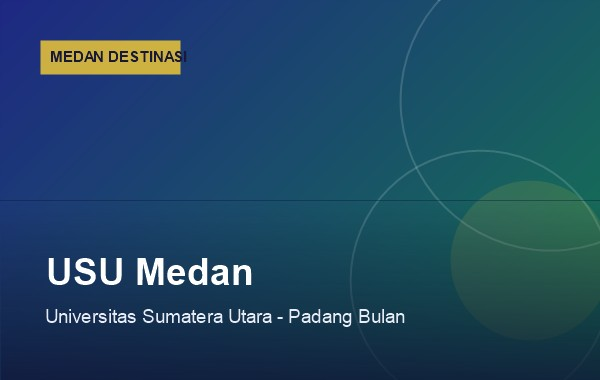
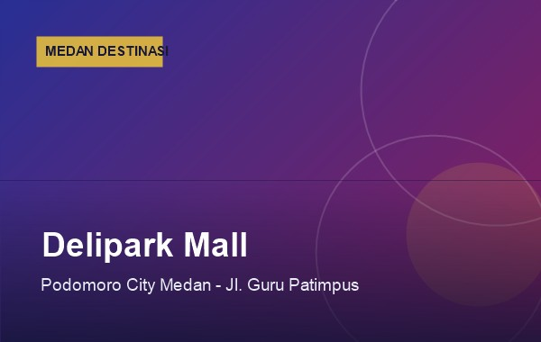
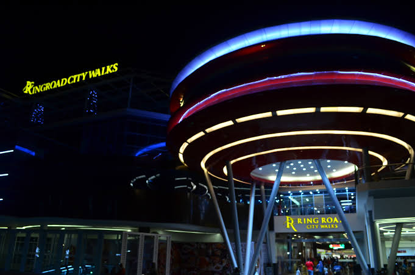
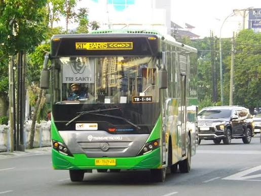
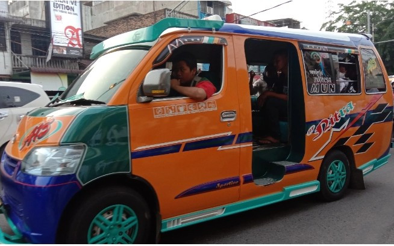
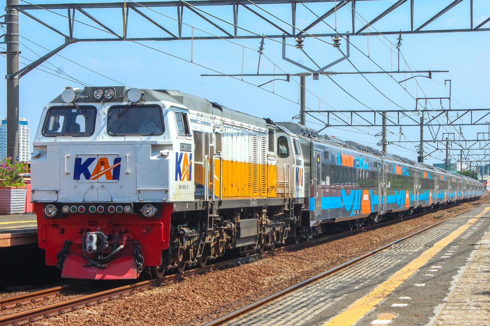

PendidikanUSU
KampusPintu 1 - 4 Padang Bulan, dilalui berbagai rute angkot (KPUM, Morina) dan TMD Koridor 2.

Temukan rute terbaik, langkah demi langkah, dengan panduan yang jelas.
Tempat favorit yang paling sering dikunjungi mahasiswa, wisatawan, dan warga Medan.

PendidikanPintu 1 - 4 Padang Bulan, dilalui berbagai rute angkot (KPUM, Morina) dan TMD Koridor 2.

Shopping & LifestyleSuperblock modern di pusat kota Medan dengan akses mudah dari Lapangan Merdeka dan Kesawan.

Mall & HiburanDestinasi favorit warga Medan barat dengan bioskop XXI dan pusat kuliner di Jalan Gagak Hitam.
Solusi navigasi cerdas yang dirancang khusus untuk kenyamanan perjalanan sehari-hari di Kota Medan.
Bandingkan estimasi biaya perjalanan angkot, Trans Metro Deli, dan ojol secara transparan tanpa khawatir ditarif mahal.
Lihat estimasi waktu tempuh tercepat, jadwal kedatangan armada, serta opsi dengan jumlah transit seminimal mungkin.
Titik naik, kode trayek angkot, halte pemberhentian, dan panduan transit yang mudah dipahami bahkan untuk pendatang baru.
Tiga pilihan utama transportasi umum untuk mobilitas hemat dan nyaman di seluruh penjuru kota.

Bus modern ber-AC dengan skema Teman Bus. Melayani koridor utama seperti Terminal Amplas, Pinang Baris, Lapangan Merdeka, Tuntungan, dan Belawan dengan pembayaran non-tunai (Tap Cash/QRIS).

Jaringan transportasi terluas yang menembus lorong dan jalan penghubung kota. Dioperasikan oleh KPUM, Morina, Medan Bus, Rahayu, dan lainnya dengan kode nomor trayek di kaca depan.

Bebas hambatan macet dari pusat kota ke Bandara Internasional Kualanamu (KNO) via Kereta Api Bandara, serta komuter Sri Lelawangsa menghubungkan Medan dengan Kota Binjai.